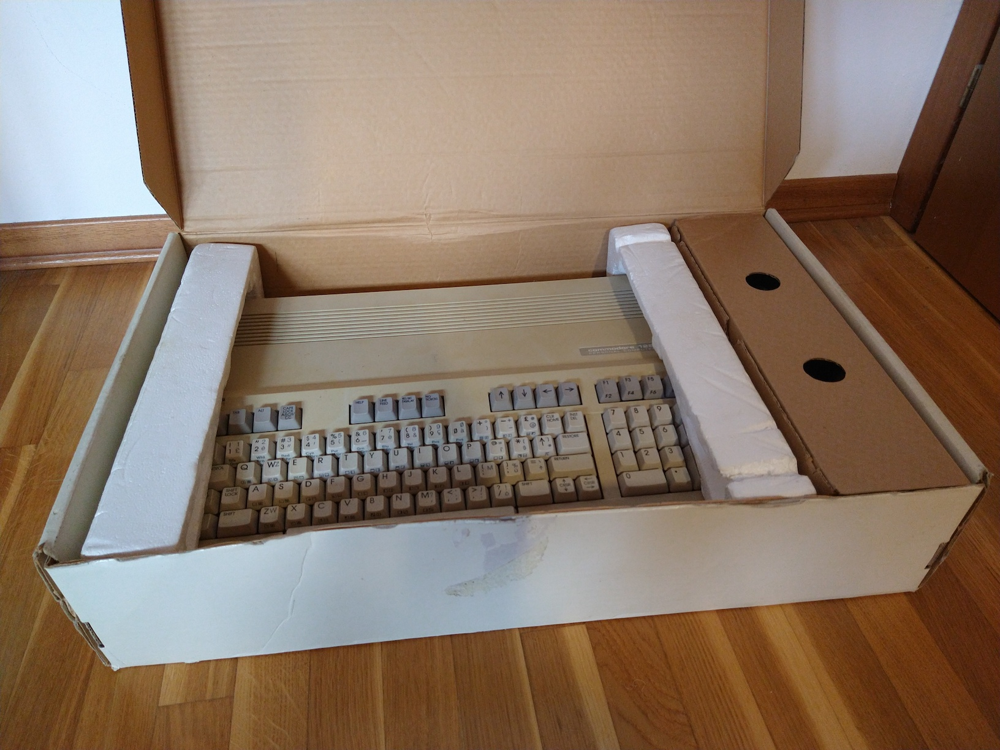
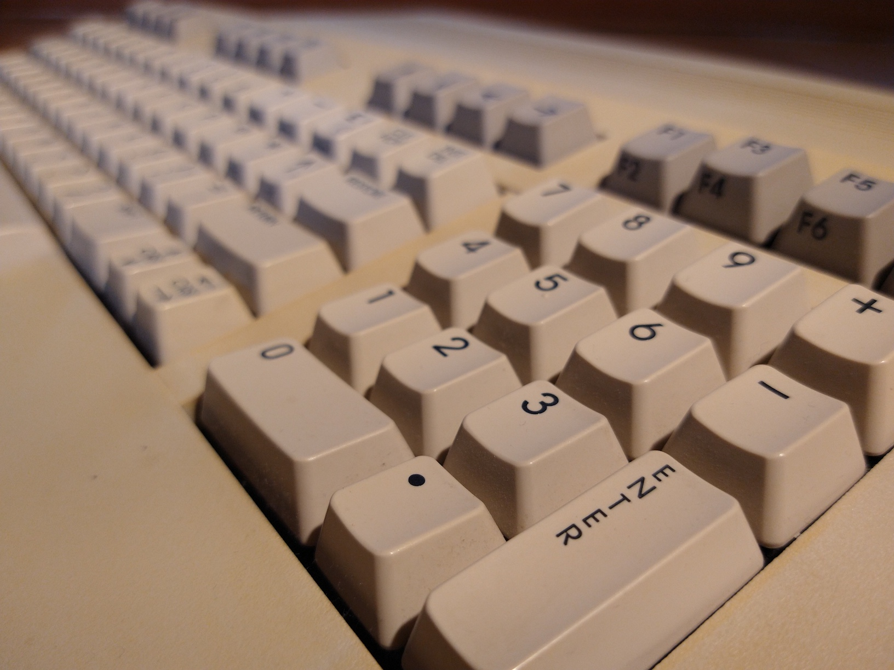
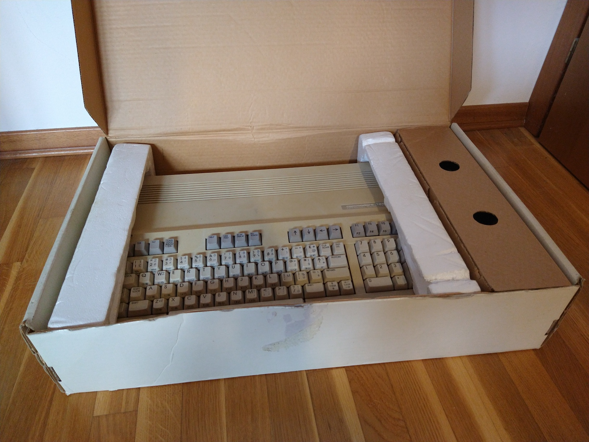
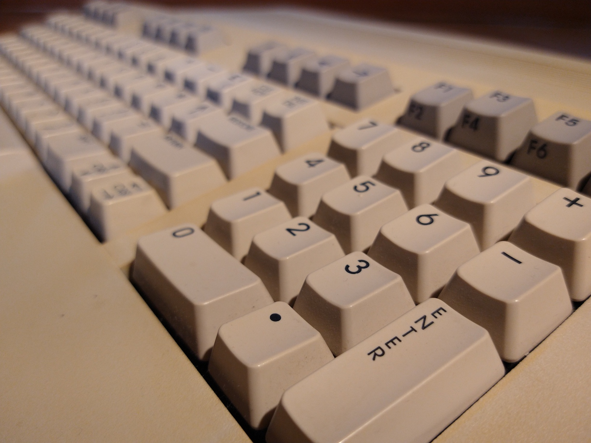

Commodore 128
(The text on this page is still being worked on (though most things are there already, it just needs some minor touch-ups))
Specifications
- Release year: 1985
- Processor: 8502 @ 1 or 2 MHz + Zilog Z80 @ 4 MHz
- RAM: 128 KB (expandable up to 640KB with an expansion)
- Graphics: Composite/S-Video (40 column mode, 320x200) + RGBI (80 column mode, 640x200)
- Storage: External (tape drive / floppy drive)
About this computer
The Commodore 128 was an interesting computer: built to be backwards-compatible with the Commodore 64, it never got a ton of software that took advantage of its specific capabilities. The 128 came with a Z80 processor specifically to run the CP/M operating system - combined with the C64 emulation this gave the system the ability to run a wide variety of software, though most owners probably just used the machine to run software made for the 64.
The Commodore 128 is able to operate in various modes:
- C128 mode (40 or 80 columns mode) - this is the mode that the 128 normally boots with.
- C64 mode - this enabled users to run most C64 programs, with a high degree of compatibility. During this mode all C128 functions are disabled
- CP/M mode - the C128 was shipped with a CP/M 3 disk (even though the computer didn't come with a disk drive in the box) - this was one of the big selling points of the system: being able to run CP/M applications opened the 128 up to the world of business, which was definitely a big deal (since the C64 wasn't all that popular with businesses), however it's important to note that this was 1985: IBM PCs and compatibles had already been in the market for multiple years at that point, and CP/M wasn't as big of a deal then as it was in, say 1980. The CP/M mode could run both in 40 column and 80 column modes, but since the majority of CP/M programs were designed for 80 columns using an 80 column screen was generally required.
I bought my C128 at a flea market (which I returned to not long after to buy some games and a cheap-looking controller), with the original box and
a semi-broken Datassette. Unfortunately, the machine is no longer operational as a fuse in the power supply has blown and I haven't replaced it yet.
An interesting thing about the power supply that came with my 128 is that it was labelled as an "A500" PSU, and yet it worked fine with my 128... I'm not sure
if this eventually caused whatever issue made the fuse in it blow, but I'll have to be careful when I decide to revive the Commodore.
Pictures
 



{kind=link}
{kind=link}
{kind=link}
{kind=link}
{kind=link}
{kind=link}
{kind=link}
{kind=link}
Check out the mouse-over text I added to the pictures!